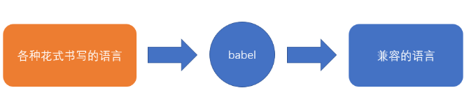
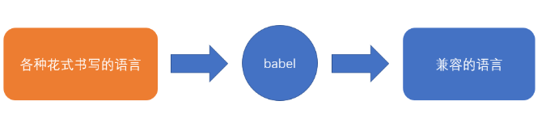
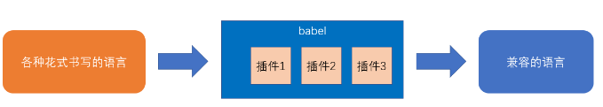
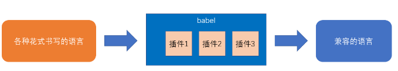

babel 的安装和使用
babel 简介
不同版本的浏览器能识别的 ES 标准并不相同，就导致了开发者面对不同版本的浏览器要使用不同的语言。
babel 的出现，就是用于解决这样的问题，它是一个编译器，可以把不同标准书写的语言，编译为统一的、能被各种浏览器识别的语言
 

由于语言的转换工作灵活多样，babel 的做法和 postcss、webpack 差不多，它本身仅提供一些分析功能，真正的转换需要依托于插件完成
 

babel 的安装
babel 可以和构建工具联合使用，也可以独立使用
如果要独立的使用 babel，需要安装下面两个库：
- @babel/core：babel 核心库，提供了编译所需的所有 api
- @babel/cli：提供一个命令行工具，调用核心库的 api 完成编译
npm i -D @babel/core @babel/cli
babel 的使用
@babel/cli 的使用极其简单
它提供了一个命令babel
# 按文件编译
babel 要编译的文件 -o 编辑结果文件
# 按目录编译
babel 要编译的整个目录 -d 编译结果放置的目录
babel 的配置
可以看到，babel 本身没有做任何事情，真正的编译要依托于babel 插件和babel 预设来完成
babel 预设和 postcss 预设含义一样，是多个插件的集合体，用于解决一系列常见的兼容问题
如何告诉 babel 要使用哪些插件或预设呢？需要通过一个配置文件.babelrc
{
"presets": [],
"plugins": []
}
babel 预设
babel 有多种预设，最常见的预设是@babel/preset-env
@babel/preset-env可以让你使用最新的 JS 语法，而无需针对每种语法转换设置具体的插件
配置
{
"presets": ["@babel/preset-env"]
}
兼容的浏览器
@babel/preset-env需要根据兼容的浏览器范围来确定如何编译，和 postcss 一样，可以使用文件.browserslistrc来描述浏览器的兼容范围
last 3 version
> 1%
not ie <= 8
自身的配置
和postcss-preset-env一样，@babel/preset-env自身也有一些配置
配置方式是：
{
"presets": [
[
"@babel/preset-env",
{
"配置项1": "配置值",
"配置项2": "配置值",
"配置项3": "配置值"
}
]
]
}
其中一个比较常见的配置项是usebuiltins，该配置的默认值是 false
它有什么用呢？由于该预设仅转换新的语法，并不对新的 API 进行任何处理
例如：
new Promise((resolve) => {
resolve();
});
转换的结果为
new Promise(function (resolve) {
resolve();
});
如果遇到没有 Promise 构造函数的旧版本浏览器，该代码就会报错
而配置usebuiltins可以在编译结果中注入这些新的 API，它的值默认为false，表示不注入任何新的 API，可以将其设置为usage，表示根据 API 的使用情况，按需导入 API
{
"presets": [
[
"@babel/preset-env",
{
"useBuiltIns": "usage",
"corejs": 3
}
]
]
}
babel 插件
上节课补充：@babel/polyfill 已过时，目前被
core-js和generator-runtime所取代
除了预设可以转换代码之外，插件也可以转换代码，它们的顺序是：
- 插件在 Presets 前运行。
- 插件顺序从前往后排列。
- Preset 顺序是颠倒的（从后往前）。
通常情况下，@babel/preset-env只转换那些已经形成正式标准的语法，对于某些处于早期阶段、还没有确定的语法不做转换。
如果要转换这些语法，就要单独使用插件
下面随便列举一些插件
@babel/plugin-proposal-class-properties
该插件可以让你在类中书写初始化字段
class A {
a = 1;
constructor() {
this.b = 3;
}
}
@babel/plugin-proposal-function-bind
该插件可以让你轻松的为某个方法绑定 this
function Print() {
console.log(this.loginId);
}
const obj = {
loginId: "abc",
};
obj::Print(); //相当于：Print.call(obj);
遗憾的是，目前 vscode 无法识别该语法，会在代码中报错，虽然并不会有什么实际性的危害，但是影响观感
@babel/plugin-proposal-optional-chaining
const obj = {
foo: {
bar: {
baz: 42,
},
},
};
const baz = obj?.foo?.bar?.baz; // 42
const safe = obj?.qux?.baz; // undefined
babel-plugin-transform-remove-console
该插件会移除源码中的控制台输出语句
console.log("foo");
console.error("bar");
编译后
@babel/plugin-transform-runtime
用于提供一些公共的 API，这些 API 会帮助代码转换